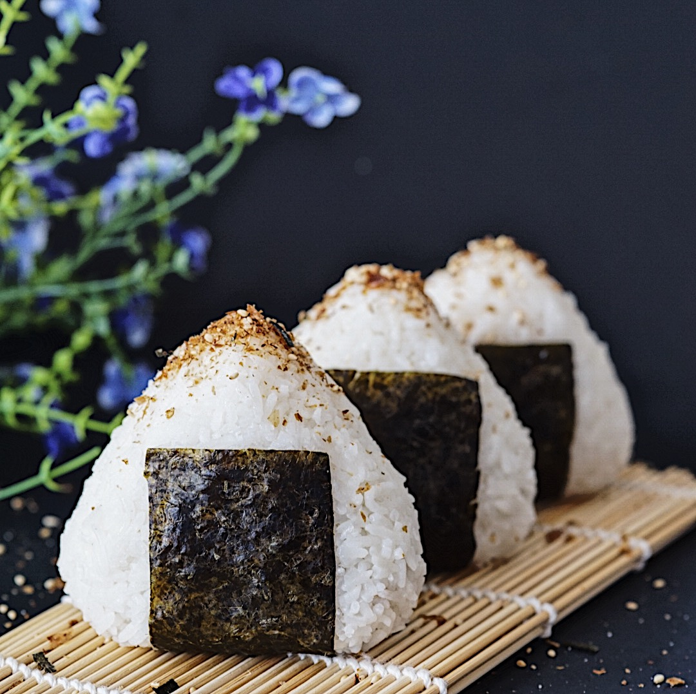

Onigiri recipe

Description
A fluffy Japanese rice ball filled with a savory tuna and
mayonnaise filling, Tuna Mayo Onigiri (ツナマヨおにぎり)
is a modern staple of Japanese bento lunches.
Ingredients
- 1 ½ cups Japanese short-grain rice 2 rice cooker cups
- 1 ⅔ cups cold water
- 85 grams chunk tuna in oil 1 small US can
- 3 tablespoons Japanese mayonnaise such as Kewpie
- 1 teaspoon soy sauce
- 6 wild sesame leaves green shiso or nori will work too
- Salt
Steps
- Wash and cook the rice according to the directions
in my sushi rice recipe (but use the proportion
of rice and water in this recipe).
- While the rice cooks, open the can of tuna and drain out
any excess liquid. Add the tuna to a bowl along with the
mayonnaise and soy sauce. Mix well to form a uniform paste.
- Prepare a bowl of water and a small bowl of salt.
- When the rice is cooked, stir it to fluff and then
transfer it to a bowl to cool slightly and cover
it with a damp towel to keep it from drying out.
- When the rice is cool enough to handle but still
on the hot side, wet your hands in the water bowl.
Dab your index finger in the bowl of salt
and rub the salt around your hands.
- Working quickly, scoop 1/6 of the rice
into your non-dominant hand and make a
little well in the center of the rice.
- Add about 2 teaspoons of tuna mayo filling into
the well and cover the tuna with the surrounding rice.
- Cup the hand holding the rice like a
taco and then use 2-3 fingers of your
opposite hand to shape the rice into a triangle.
- Toss the rice ball onto another side and then
repeat the cupping and shaping step.
Repeat until the onigiri is the desired shape.
- Wrap the Tuna Mayo Onigiri with a wild sesame leaf,
and repeat steps 5-10 until you run out of rice.